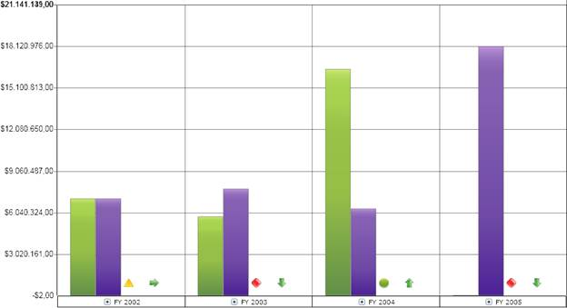
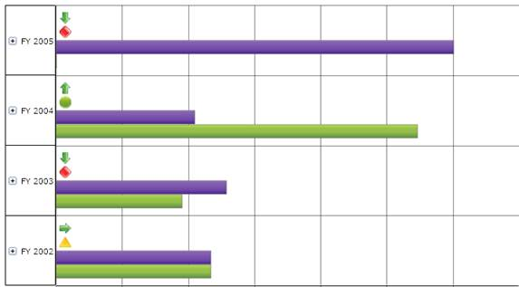

Key Performance Indicators (KPIs)—also called scorecards—are typically used to assist decision makers in measuring the performance of a business over time. Essential BI Chart for Silverlight supports both column charts and bar charts, which can be used to display KPIs.
Use Case Scenarios
KPIs are most widely used for analyzing the performance of key business operations over a particular period of time; such metrics could be used for sales or marketing as well as stock exchange dashboards.
Specifying KPI for Charts in an Application
The following steps explain how to create an OLAPChart control with a simple KPI report. Refer to the code below for an illustration of how to implement these steps.
The following steps assume that you know how to create an application that contains an OLAP Chart for Silverlight. If you are not familiar with how to do so, please refer to the “Getting Started” section.
Adding an OlapChart control to an application
First, create an instance of an OlapChart control in the application, as seen in the following code.
|
[XAML] <sfchart:OlapChart />
|
|
[C#] OlapChart olapChart1 = new OlapChart();
|
|
[VB] Dim olapChart1 As OlapChart = New OlapChart()
|
Creating a report with KPI support
1. To create a report with KPIs, You need to first define KpiElements.
2. Then, add KpiElements to an axis in the report.
Note: If an OlapReport already contains MeasureElements, then KpiElements must be added to the same axis.
|
[C#] private OlapReport KPIReport()
|
|
[VB] Private Function KPIReport() As OlapReport Dim olapReport As OlapReport = New OlapReport() olapReport.CurrentCubeName = "Adventure Works"
' Getting KPI elements Dim kpiElement As KpiElements = New KpiElements()
' Customizing KPI element properties kpiElement.Elements.Add(New KpiElement With {.Name = "Internet Revenue", .ShowKPIGoal = True, .ShowKPIStatus = True, .ShowKPIValue = True, .ShowKPITrend = True})
' Specifying the row name for the dimension element Dim dimensionElementRow As DimensionElement = New DimensionElement() dimensionElementRow.Name = "Date" dimensionElementRow.AddLevel("Fiscal", "Fiscal Year")
' Adding categorical elements olapReport.CategoricalElements.Add(kpiElement)
' Adding Series elements olapReport.SeriesElements.Add(dimensionElementRow)
Return olapReport End Function
|
Adding a report to OlapDataManager
1. Bind the OLAP report that was created in the above steps with OlapDataManager by using the SetCurrentReport method.
2. Set the manager to OlapChart’s data manager.
3. Specify the chart type. Specifying the chart type as Column will result in a column KPI. If the chart type is Bar, this will result in a Bar KPI. In the following code, in the third line, we have set the chart type as Column by setting the OlapChartType property of olapChart.
Note: The default KPI type is Column. Also, you cannot set any other chart types other than Column or Bar.
|
[C#] this.olapDataManager.SetCurrentReport(KPIReport());
|
|
[VB] Me.olapDataManager.SetCurrentReport(KPIReport()) Me.olapChart1.OlapDataManager = olapDataManager Me.olapChart1.OlapChartType = OlapChartTypes.Column Me.olapChart1.DataBind()
|
Setting a column KPI chart
To select a Column KPI, you need to set the OlapChartType to Column, as described in the previous section, “Adding a report to OlapDataManager.”
Note: Column KPI is the default type.
The following image illustrates a simple column KPI chart.

Figure 55: OLAP Chart with Column KPIs
Setting a bar KPI chart
To select a bar KPI, you need to set the OlapChartType to Bar, as described in the section “Adding a report to OlapDataManager”
The following image illustrates a simple bar KPI chart.

Figure 56: OLAP Chart with Bar KPIs
Sample Link
OLAP Report Sample
To access the local OLAP Report sample, navigate to OLAP Base -> Namespace in OLAP Base -> Syncfusion.Olap.Reports -> Steps in creating the report -> Sample Reports for OLAP data.
Chart Appearance Sample
To access the local Chart Appearance sample:
1. Open the Syncfusion Dashboard.
2. Click Business Intelligence.
3. Click the Silverlight drop-down list, and then select Explore Samples.
4. Navigate to Syncfusion.OlapChart.Silverlight.Samples -> Syncfusion.OlapChart.Silverlight.Samples -> Samples -> KPI -> KPIReports.